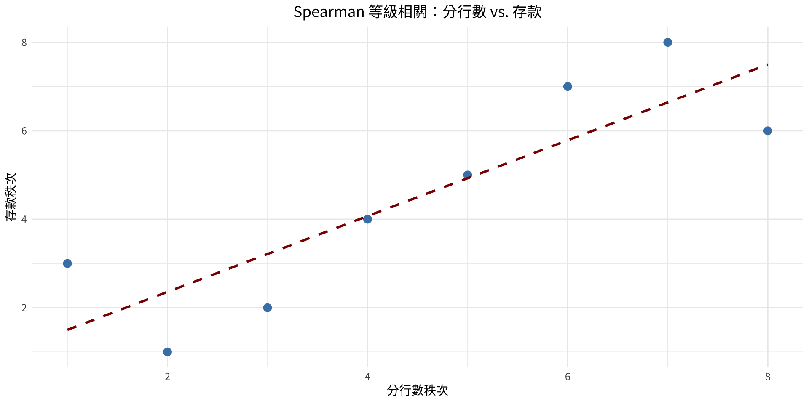

正號數: 3 | 負號數: 15 n = 18 | 檢定值 = 3 臨界值（表 J，n=18，alpha=0.05，雙尾）: 4決策: 拒絕 H0 第13章：無母數統計
實踐大學
2026-08-02
什麼是無母數方法？
標準的母數檢定（z、t、F）要求母體呈常態分配。當此假設無法成立時，無母數（無分配假設）方法提供了有效的替代方案。
這些方法也可以用來檢定不涉及特定母體參數（如 \mu、\sigma 或 p）的假設。
本章主題：
五大主要優點
三大主要缺點
基本假設
樣本必須為隨機抽取。使用兩個或多個樣本時，各樣本必須相互獨立（除非另有說明）。
如何對資料排序
將數值由小到大排列，依序賦予秩次 1、2、3、……
並列（Ties）： 當兩個或多個數值相等時，將其原本應占的秩次取平均值分配給各個相同數值。
範例： 數值 3、6、6、8、10 - 3 → 秩次 1 - 6、6 → 並列秩次 2 與 3 → 各得秩次 2.5 - 8 → 秩次 4 - 10 → 秩次 5
符號檢定的用途
符號檢定用於檢定單一樣本的中位數，或比較兩個相依樣本（前後測）。
單一樣本檢定程序： - 將每個觀測值與假設中位數比較 - 賦予符號：高於為 +，低於為 -，相等為 0 - 檢定值 = + 與 - 符號中較小的計數 - 使用表 J（n \leq 25）或 z 近似法（n \geq 26）
說明
當 n \leq 25 使用表 J，n = + 與 - 符號的總計數。若檢定值 \leq 臨界值，則拒絕 H_0。
當 n \geq 26 — z 近似法 z = \frac{(X + 0.5) - n/2}{\sqrt{n}/2}
其中 X = + 或 - 符號中較小的計數，n = 樣本大小。 使用表 E 查臨界值。
刨冰銷售量
一家商店老闆假設每天刨冰銷售量的中位數為 40 份。抽取 20 天的樣本如下：
18, 43, 40, 16, 22, 30, 29, 32, 37, 36, 39, 34, 39, 45, 28, 36, 40, 34, 39, 52
在 \alpha = 0.05 下，檢定老闆的主張。
解題
數學解法
步驟 1： H_0: MD = 40（主張）；H_1: MD \neq 40
步驟 2： 將每個數值與 40 比較並賦予符號： -, +, 0, -, -, -, -, -, -, -, -, -, -, +, -, -, 0, -, -, +
去除兩個 0 → n = 18；正號：3 個，負號：15 個
由表 J：n = 18，\alpha = 0.05（雙尾）→ 臨界值 = 4
步驟 3： 檢定值 = min(3, 15) = 3
步驟 4： 3 \leq 4 → 拒絕 H_0
步驟 5： 有足夠證據拒絕中位數為 40 的主張。
解題
R 程式
正號數: 3 | 負號數: 15 n = 18 | 檢定值 = 3 臨界值（表 J，n=18，alpha=0.05，雙尾）: 4決策: 拒絕 H0 外裔居民年齡（大樣本）
美國外裔居民的中位年齡被主張至少為 36.4 歲。在 n = 50 名居民的樣本中，有 21 人年齡超過 36.4 歲。在 \alpha = 0.05 下，檢定此主張。
H_0: MD \geq 36.4 \text{（主張）} \qquad H_1: MD < 36.4
解題
數學解法
由於 n = 50 \geq 26，使用 z 近似法。
正號（年齡超過 36.4）：21；負號（年齡低於 36.4）：29
X = 較小計數 = 21（使用 21 因為是左尾檢定——檢查超過 36.4 的人數是否偏少）
z = \frac{(X + 0.5) - n/2}{\sqrt{n}/2} = \frac{(21 + 0.5) - 25}{\sqrt{50}/2} = \frac{-3.5}{3.536} = -0.99
步驟 4： 臨界值（左尾，\alpha = 0.05）：-1.65
由於 -0.99 > -1.65 → 不拒絕 H_0
步驟 5： 沒有足夠證據拒絕中位年齡至少為 36.4 歲的主張。
解題
R 程式
X（較小計數）= 21 z 檢定值 = -0.99 z 臨界值 = -1.645 決策: 不拒絕 H0 游泳者耳部感染（配對符號檢定）
研究者認為耳塞可以減少耳部感染。十名游泳者在使用耳塞前後的感染次數如下。在 \alpha = 0.05 下，檢定耳塞是否有效減少感染。
| 游泳者 | 使用前 | 使用後 | 符號（前 − 後） |
|---|---|---|---|
| A | 3 | 2 | + |
| B | 0 | 1 | − |
| C | 5 | 4 | + |
| D | 4 | 0 | + |
| E | 2 | 1 | + |
| F | 4 | 3 | + |
| G | 3 | 1 | + |
| H | 5 | 3 | + |
| I | 2 | 2 | 0 |
| J | 1 | 3 | − |
解題
解題
步驟 1： H_0: 耳塞不能減少感染；H_1: 耳塞能減少感染（主張）
步驟 2： 差值符號（前 − 後）：+、−、+、+、+、+、+、+、0、−
去除 0 → n = 9；正號：7 個，負號：2 個
由表 J：n = 9，\alpha = 0.05（單尾）→ 臨界值 = 1
步驟 3： 檢定值 = 較小值 = 2
步驟 4： 2 > 1 → 不拒絕 H_0
步驟 5： 沒有足夠證據顯示耳塞減少了感染次數。
備註： 資料確實偏向對立假設（正號較多），但在此小樣本下差異不夠顯著。
before <- c(3, 0, 5, 4, 2, 4, 3, 5, 2, 1)
after <- c(2, 1, 4, 0, 1, 3, 1, 3, 2, 3)
diff_signs <- sign(before - after)
diff_signs <- diff_signs[diff_signs != 0]
n_pos <- sum(diff_signs > 0)
n_neg <- sum(diff_signs < 0)
n <- length(diff_signs)
test_val <- min(n_pos, n_neg)
cat("正號數:", n_pos, "| 負號數:", n_neg, "\n")正號數: 7 | 負號數: 2 n = 9 | 檢定值 = 2 臨界值（表 J，n=9，alpha=0.05，單尾）: 1決策: 不拒絕 H0 用途
用於兩個獨立樣本且無法假設常態性的情況。是獨立樣本 t 檢定的無母數對應方法。
兩個樣本的大小均須 \geq 10。
概念： 將兩樣本合併，對所有數值統一排秩，再比較秩和。若兩組有差異，某組的秩次會持續高於另一組。
公式
設 n_1 = 較小樣本大小，n_2 = 較大樣本大小，R = 較小組的秩和。
\mu_R = \frac{n_1(n_1 + n_2 + 1)}{2} \qquad \sigma_R = \sqrt{\frac{n_1 n_2 (n_1 + n_2 + 1)}{12}}
z = \frac{R - \mu_R}{\sigma_R}
使用表 E 查臨界值（標準常態）。
障礙賽完成時間
兩個獨立組別（陸軍：n=12，海軍陸戰隊：n=11）完成一段障礙賽。在 \alpha = 0.05 下，檢定兩組完成時間是否有差異。
| 陸軍 | 15 18 16 17 13 22 24 17 19 21 26 28 |
|---|---|
| 海軍陸戰隊 | 14 9 16 19 10 12 11 8 15 18 25 |
解題
數學解法
步驟 1： H_0: 兩組時間無差異；H_1: 有差異（主張）
步驟 2： 雙尾，\alpha = 0.05 → z_{crit} = \pm 1.96
步驟 3： 合併 23 個數值並排秩，再加總海軍陸戰隊（n_1 = 11）的秩次：
R = 1+2+3+4+5+7+8.5+10.5+14.5+16.5+21 = 93
\mu_R = \frac{11(11+12+1)}{2} = 132 \qquad \sigma_R = \sqrt{\frac{11 \cdot 12 \cdot 24}{12}} = 16.2
z = \frac{93 - 132}{16.2} = -2.41
步驟 4： |-2.41| > 1.96 → 拒絕 H_0
步驟 5： 有足夠證據顯示兩組時間存在差異。
解題
R 程式
Wilcoxon rank sum exact test
data: army and marines
W = 105, p-value = 0.01475
alternative hypothesis: true location shift is not equal to 0# 手動計算 z 值
all_times <- c(army, marines)
groups <- c(rep("Army",12), rep("Marine",11))
ranks_all <- rank(all_times)
R <- sum(ranks_all[groups == "Marine"]) # 較小組
n1 <- 11; n2 <- 12
mu_R <- n1*(n1+n2+1)/2
sig_R <- sqrt(n1*n2*(n1+n2+1)/12)
z_stat <- (R - mu_R) / sig_R
cat("\nR =", R, "| mu_R =", mu_R, "| sigma_R =", round(sig_R,2))
R = 93 | mu_R = 132 | sigma_R = 16.25
z = -2.4 | 臨界值 = +/-1.96用途
用於兩個相依（配對）樣本且無法假設常態性的情況。是配對 t 檢定的無母數對應方法。
與符號檢定不同，此方法同時考量每個差值的大小，而非僅有方向。
n \leq 30 時：使用表 K 查臨界值。
n > 30 時：使用 z 近似法： z = \frac{w_s - \dfrac{n(n+1)}{4}}{\sqrt{\dfrac{n(n+1)(2n+1)}{24}}} 其中 w_s = 絕對秩和中較小的那個。
逐步程序
商店竊盜事件
一家百貨公司將保全人員加倍。連續 7 天的每日竊盜件數（增加前與增加後）如下。在 \alpha = 0.05 下，是否有足夠證據顯示事件件數發生改變？
| 星期 | 增加前 | 增加後 |
|---|---|---|
| 一 | 7 | 5 |
| 二 | 2 | 3 |
| 三 | 3 | 4 |
| 四 | 6 | 3 |
| 五 | 5 | 1 |
| 六 | 8 | 6 |
| 日 | 12 | 4 |
解題
數學解法
步驟 1： H_0: 竊盜件數無差異；H_1: 有差異（主張）
步驟 2： 由表 K，n = 7，\alpha = 0.05（雙尾）→ 臨界值 = 2
步驟 3： 計算差值、絕對值、秩次及帶號秩次：
| 星期 | D | |D| | 秩次 | 帶號秩次 |
|---|---|---|---|---|
| 一 | 2 | 2 | 3.5 | +3.5 |
| 二 | −1 | 1 | 1.5 | −1.5 |
| 三 | −1 | 1 | 1.5 | −1.5 |
| 四 | 3 | 3 | 5 | +5 |
| 五 | 4 | 4 | 6 | +6 |
| 六 | 2 | 2 | 3.5 | +3.5 |
| 日 | 8 | 8 | 7 | +7 |
W^+ = 3.5+5+6+3.5+7 = 25；W^- = 1.5+1.5 = 3；w_s = 3
步驟 4： 3 > 2 → 不拒絕 H_0
步驟 5： 沒有足夠證據顯示增加保全人員後竊盜件數有所改變。
解題
R 程式
Wilcoxon signed rank test with continuity correction
data: before and after
V = 25, p-value = 0.07488
alternative hypothesis: true location shift is not equal to 0
W+ = 25 | W- = 3 | ws = 3
臨界值（表 K，n=7，alpha=0.05）: 2
決策: 不拒絕 H0 用途
單因子變異數分析（ANOVA） 的無母數等效方法。在不要求常態性的情況下比較三個或更多獨立組別。
注意
下方的範例為了讓排秩過程容易理解，每組僅使用 4 個觀測值；實務上，每組樣本至少應有 5 個觀測值，卡方近似才可靠。
H 統計量
H = \frac{12}{N(N+1)}\left(\frac{R_1^2}{n_1} + \frac{R_2^2}{n_2} + \cdots + \frac{R_k^2}{n_k}\right) - 3(N+1)
其中： - R_i = 第 i 組的秩和 - n_i = 第 i 組的樣本大小 - N = n_1 + n_2 + \cdots + n_k - k = 組數
臨界值： 由表 G 查自由度 d.f. = k - 1 的 \chi^2 值。若 H > \chi^2_{crit}，則拒絕 H_0。
醫院感染數
研究者檢視三組醫院的感染件數。在 \alpha = 0.05 下，檢定各組感染分佈是否相同。
| A 組 | B 組 | C 組 |
|---|---|---|
| 557 | 476 | 105 |
| 315 | 232 | 110 |
| 920 | 80 | 167 |
| 178 | 116 | 155 |
解題
數學解法
步驟 1： H_0: 各組感染分佈無差異（主張）；H_1: 分佈有差異
步驟 2： d.f. = k - 1 = 2；臨界值 = 5.991
步驟 3： 合併 12 個數值並排秩：
| 數值 | 組別 | 秩次 |
|---|---|---|
| 80 | B | 1 |
| 155 | C | 5 |
| 315 | A | 9 |
R_A = 7+9+11+12 = 39；R_B = 1+4+8+10 = 23；R_C = 2+3+5+6 = 16
H = \frac{12}{12 \cdot 13}\left(\frac{39^2}{4} + \frac{23^2}{4} + \frac{16^2}{4}\right) - 3(13) = 5.346
步驟 4： 5.346 < 5.991 → 不拒絕 H_0
步驟 5： 沒有足夠證據顯示各醫院組別的感染數有所差異。
解題
R 程式
Kruskal-Wallis rank sum test
data: infect by group
Kruskal-Wallis chi-squared = 5.3462, df = 2, p-value = 0.06904
各組秩和：A = 39 B = 23 C = 16
H = 5.346 | 卡方臨界值（df=2）= 5.991 用途
Pearson r 的無母數等效方法。當資料為排序資料或無法假設常態性時使用。
r_s = 1 - \frac{6\sum d^2}{n(n^2 - 1)}
其中 d = 配對秩次的差值，n = 資料對數。
n \leq 30 時，使用表 L 查臨界值。
銀行分行數與存款
對於 8 家地區性銀行，分行數與存款總額（十億元）之間是否有顯著關聯？\alpha = 0.05。
| 銀行 | 分行數 | 存款（十億元） |
|---|---|---|
| A | 209 | 23 |
| B | 353 | 31 |
| C | 19 | 7 |
| D | 201 | 12 |
| E | 344 | 26 |
| F | 132 | 5 |
| G | 401 | 24 |
| H | 126 | 4 |
解題
數學解法
步驟 1： H_0: \rho_s = 0；H_1: \rho_s \neq 0
步驟 2： 由表 L，n = 8，\alpha = 0.05（雙尾）→ 臨界值 = 0.738
解題（續）
步驟 3： 對各變數排秩，計算差值：
| 銀行 | 秩次(X) | 秩次(Y) | d | d^2 |
|---|---|---|---|---|
| A | 4 | 4 | 0 | 0 |
| B | 2 | 1 | 1 | 1 |
| C | 8 | 6 | 2 | 4 |
| D | 5 | 5 | 0 | 0 |
| E | 3 | 2 | 1 | 1 |
| F | 6 | 7 | −1 | 1 |
| G | 1 | 3 | −2 | 4 |
| H | 7 | 8 | −1 | 1 |
\sum d^2 = 12
r_s = 1 - \frac{6(12)}{8(64-1)} = 1 - \frac{72}{504} = 0.857
其中 n^2-1 = 63，n(n^2-1)=504。
解題（續）
步驟 4： 由於 r_s = 0.857 > 0.738 → 拒絕 H_0。
步驟 5： 分行數與存款總額之間存在顯著的單調（等級）關聯。此結論與下方 R 輸出一致（\rho = 0.857，P 值 \approx 0.0065）。
解題
R 程式
Spearman's rank correlation rho
data: branches and deposits
S = 12, p-value = 0.00653
alternative hypothesis: true rho is not equal to 0
sample estimates:
rho
0.8571429
d^2 總和 = 12
Spearman rs = 0.857 解題
視覺化
df_bank <- data.frame(branches = branches, deposits = deposits)
ggplot(df_bank, aes(x = rank(branches), y = rank(deposits))) +
geom_point(size = 3, color = "steelblue") +
geom_smooth(method = "lm", se = FALSE, color = "darkred", linetype = "dashed") +
labs(title = "Spearman 等級相關：分行數 vs. 存款",
x = "分行數秩次", y = "存款秩次")
什麼是連串（Run）？
連串是一段連續相同符號（字母或標籤）的最長序列——其前後緊接不同符號，或位於序列的開頭/結尾。
用途： 檢定一組觀測值的序列是否具有隨機性。
使用表 M（雙尾，\alpha = 0.05）來查可接受的連串數範圍。
計算連串數
計算以下每個序列的連串數。
a. M M F F F M F F
b. H T H H H
c. A B A A A B B A B B B
解題
解題
a. MM | FFF | M | FF → 4 個連串
b. H | T | HHH → 3 個連串
c. A | B | AAA | BB | A | BBB → 6 個連串
a 的連串數: 4 b 的連串數: 3 c 的連串數: 6 火車乘客的性別
一名列車長觀察 25 名上車乘客：FFFMMFFFFMFMMMFFFFMMFFFMM
在 \alpha = 0.05 下，檢定乘客上車順序是否為隨機。
解題
數學解法
步驟 1： H_0: 乘客以隨機順序上車（主張）；H_1: 非隨機
步驟 2： 辨識連串：
FFF | MM | FFFF | M | F | MMM | FFFF | MM | FFF | MM → 10 個連串
n_1（女性）= 15；n_2（男性）= 10
步驟 3： 由表 M，n_1 = 15，n_2 = 10 → 可接受範圍：7 至 18
步驟 4： 10 落在 [7, 18] 之內 → 不拒絕 H_0
步驟 5： 沒有足夠證據顯示上車順序為非隨機。
解題
R 程式
女性（n1）= 15 | 男性（n2）= 10 連串數 = 10 臨界範圍（表 M，n1=15，n2=10，alpha=0.05）: [7, 18]決策: 不拒絕 H0 — 資料顯示為隨機 藥物戒治計畫參與者年齡
二十人依以下年齡順序加入藥物戒治計畫： 18, 36, 19, 22, 25, 44, 23, 27, 27, 35, 19, 43, 37, 32, 28, 43, 46, 19, 20, 22
在 \alpha = 0.05 下，檢定年齡是否隨機出現。
解題
數學解法
步驟 1： H_0: 年齡隨機出現（主張）；H_1: 非隨機
步驟 2： - 排序後的年齡：18 19 19 19 20 22 22 23 25 27 27 28 32 35 36 37 43 43 44 46 - 中位數 = 27（第 10 與第 11 個值的平均） - 將每個年齡替換：A（高於 27）、B（低於 27）；捨棄等於 27 的值
替換後序列（捨棄 27 後）： B A B B B A B A B | A A A A A A | B B B
步驟 3： 連串：B | A | BBB | A | B | A | B | AAAAAA | BBB → 9 個連串
n_1 = n_2 = 9（捨棄 27 後，9 個高於中位數，9 個低於中位數）
步驟 4： 表 M，n_1 = n_2 = 9 → 可接受範圍：[5, 15]
由於 9 落在 [5, 15] 之內 → 不拒絕 H_0
步驟 5： 沒有足夠證據顯示年齡為非隨機。
中位數 = 27 高於中位數（A）= 9 | 低於中位數（B）= 9 序列: B A B B B A B A B A A A A A A B B B 連串數 = 9 臨界範圍（表 M，n1=9，n2=9）: [5, 15]決策: 不拒絕 H0 — 年齡顯示為隨機 決策指引
無母數檢定快速參考
| 檢定方法 | 節次 | 適用情境 | 對應母數方法 |
|---|---|---|---|
| 符號檢定 | 13-2 | 中位數；前後測 | z 或 t 檢定 |
| Wilcoxon 秩和檢定 | 13-3 | 兩個獨立樣本 | 獨立樣本 t 檢定 |
| Wilcoxon 帶號秩檢定 | 13-4 | 兩個相依樣本 | 配對 t 檢定 |
| Kruskal-Wallis 檢定 | 13-5 | 三個或更多組別 | 單因子 ANOVA |
| Spearman r_s | 13-6 | 秩次間的相關 | Pearson r |
| 連串檢定 | 13-6 | 隨機性檢定 | 無 |
Copyright notice. These teaching materials have been adapted from Bluman, A. G. (2012). Elementary statistics: A step by step approach (8th ed.). McGraw-Hill. All rights are reserved by the original authors and publishers.
Non-commercial use only. These materials are strictly intended for educational purposes and must not be used for commercial gain or profit.
Proper attribution. Any reproduction, distribution, or use of these materials must provide proper attribution to the original source.

Elementary Statistics: A Step by Step Approach